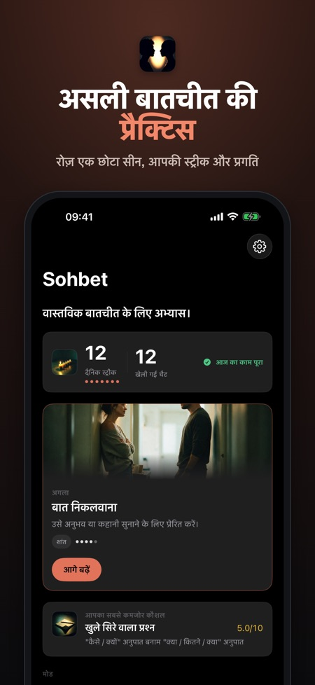
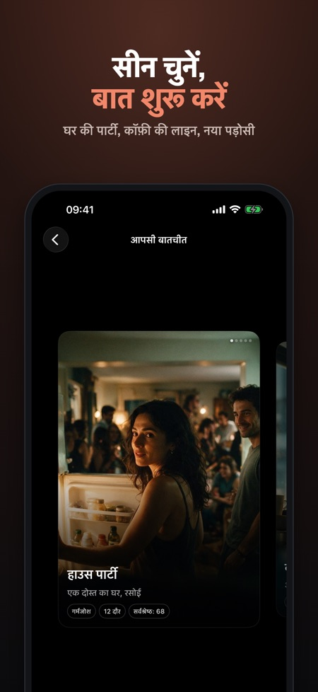
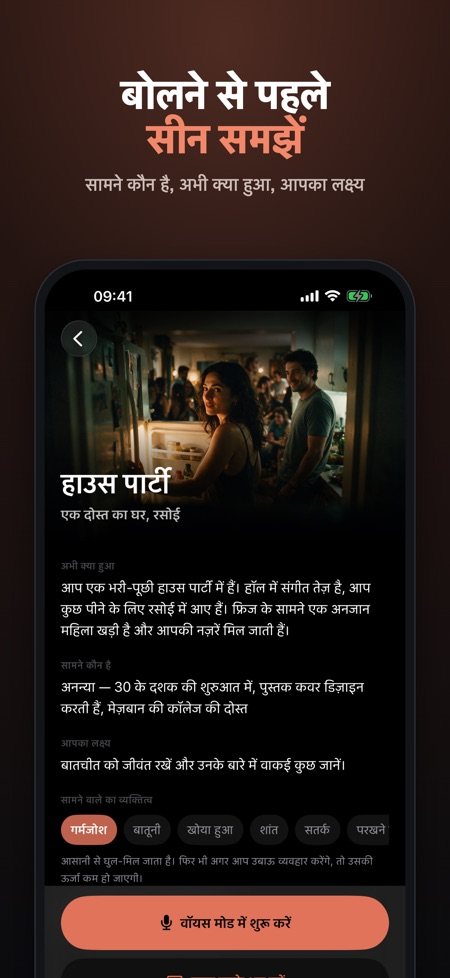

बातचीत और आत्मविश्वास सुधारें. बिना सब्सक्रिप्शन के दो बातचीत — लाइव बातचीत, वॉइस मोड और पूरा मूल्यांकन। कोई अकाउंट नहीं, कोई ईमेल नहीं। अब 41 भाषाओं में, और Pro एक सप्ताह के ट्रायल से शुरू होता है।.



Sohbet एक गेम है जहाँ आप सामाजिक कौशल का अभ्यास किसी ऐसे व्यक्ति के साथ करते हैं जो आप पर वास्तविक प्रतिक्रिया देता है।
आपके सामने वाला व्यक्ति AI द्वारा संचालित है, और वह आपकी मदद करने की कोशिश नहीं करता। बंद प्रश्न पूछेंगे तो वह बोर हो जाएगा। अपने बारे में बहुत ज़्यादा बात करेंगे तो उसकी दिलचस्पी ख़त्म हो जाएगी। सही समय पर सही बात पूछेंगे तो वह खुलकर बात करेगा। स्क्रीन के ऊपर मौजूद इंटरेस्ट बार इसे तुरंत दिखाता है — अगर यह शून्य पर पहुँच जाता है, तो बातचीत समाप्त हो जाती है।
बातचीत समाप्त होने पर
मूल्यांकन तारीफ़ से शुरू नहीं होता। यह बारी-दर-बारी विश्लेषण करता है: आपने क्या किया, वह कदम क्यों काम कर गया या नहीं किया, और इसकी जगह आप क्या कह सकते थे। "अधिक खुलकर बात करें" जैसी कोई सामान्य सलाह नहीं — हर टिप्पणी बारी संख्या और आपके द्वारा लिखे गए वाक्य से जुड़ी होती है। सुझाई गई पंक्तियाँ ऐसी हैं जिन्हें आप वास्तव में इस्तेमाल कर सकते हैं।
स्कोरिंग सख्त है। एक औसत बातचीत को 50-60 अंक मिलते हैं; 80 से ऊपर का मतलब है कि यह वास्तव में अच्छी थी। हर बात की तारीफ़ करने वाला समीक्षक कुछ नहीं सिखाता।
टाइप करने के बजाय बोलें
आप लिखने के बजाय बोल सकते हैं। परिदृश्य के आधार पर पात्र की आवाज़ पुरुष या महिला की होती है। आपकी गति और आपके ठहराव भी मूल्यांकन में शामिल होते हैं — ठीक वैसे ही जैसे एक वास्तविक बातचीत में होते हैं।
16 परिदृश्य
कैफ़े में बगल वाली टेबल, हाउस पार्टी, वर्क डिनर, किसी अनजान व्यक्ति के पास बैठना, विनम्रता से किसी को टोकना, कोई निमंत्रण अस्वीकार करना। ये आसान से कठिन के क्रम में खुलते हैं। आप किसी परिदृश्य को एक अलग व्यक्तित्व के ख़िलाफ़ फिर से खेल सकते हैं — वही दृश्य, लेकिन अधिक कठिन व्यक्ति।
आपकी कमियों के आधार पर बने परिदृश्य
कुछ बातचीत के बाद यह स्पष्ट हो जाता है कि कौन सा कौशल पीछे छूट रहा है। एक टैप से ठीक उसी कौशल पर केंद्रित नया परिदृश्य तैयार हो जाता है।
इतिहास
हर बातचीत को उसके ट्रांसक्रिप्ट और मूल्यांकन के साथ सहेजा जाता है। आप अपनी बार-बार होने वाली आदतों को देख सकते हैं — कि क्या आप हमेशा एक ही जगह अटकते हैं, या आप बेहतर हो रहे हैं।
गोपनीयता
कोई अकाउंट नहीं, कोई ईमेल नहीं। आपके ट्रांसक्रिप्ट और मूल्यांकन आपके फ़ोन पर सहेजे जाते हैं। बातचीत के दौरान टेक्स्ट हमारे सर्वर से होकर उस AI मॉडल तक जाता है जो किरदार के जवाब और आपका मूल्यांकन लिखता है, और आपकी आवाज़ टेक्स्ट में बदलने के लिए एक स्पीच रिकग्निशन सेवा को भेजी जाती है। हमारा सर्वर टेक्स्ट नहीं रखता, दो अपवादों को छोड़कर: विफल हुआ अनुरोध 7 दिन रखा जाता है ताकि हम गड़बड़ी ठीक कर सकें, और केवल तभी जब आप सेटिंग्स में इसे चालू करें, बातचीत का एक छोटा नमूना ऐप सुधारने के लिए 90 दिन रखा जाता है। इनमें से कोई भी आपसे जुड़ा नहीं होता। ऑडियो कभी फ़ाइल के रूप में सहेजा नहीं जाता।
सब्सक्रिप्शन
दो बातचीत बिना सब्सक्रिप्शन के शामिल हैं — लाइव पात्र, वॉइस मोड और पूरे मूल्यांकन के साथ। Sohbet Pro मासिक है और एक सप्ताह के ट्रायल से शुरू होता है: यह उस सीमा को हटाता है और कोच रिपोर्ट को भी अनलॉक करता है, जो आपकी सभी बातचीत को एक साथ पढ़ती है, और आपकी कमियों पर केंद्रित परिदृश्य जनरेशन की सुविधा देती है।
सब्सक्रिप्शन हर अवधि के अंत में स्वतः नवीनीकृत होता है। आप Settings > Apple Account > Subscriptions में जाकर इसे किसी भी समय रद्द कर सकते हैं।